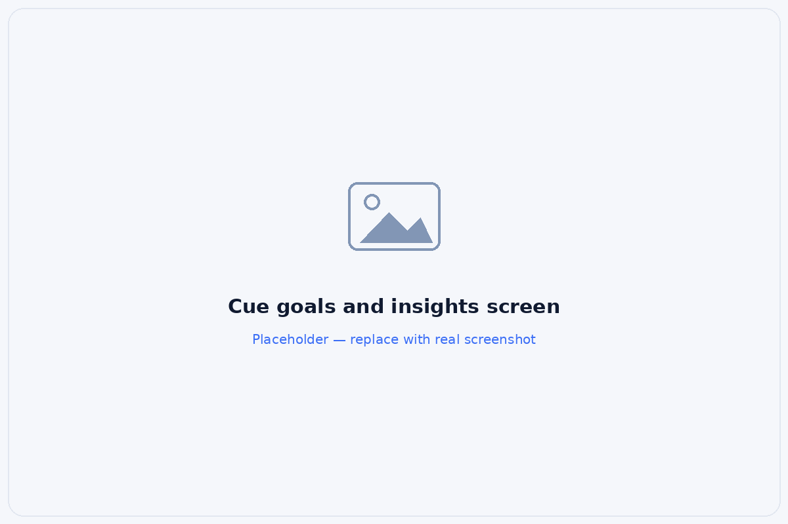
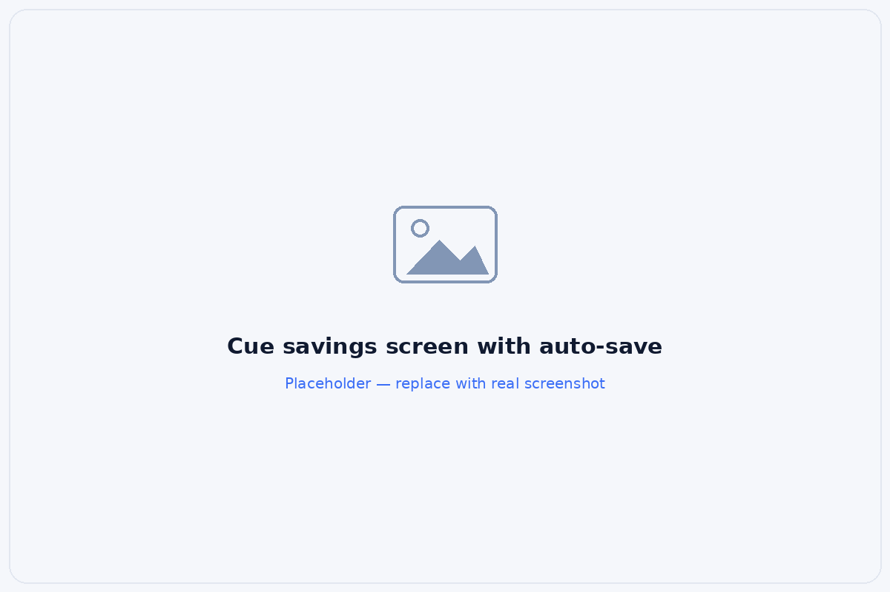

A concept app that helps couples stay aligned before money becomes conflict: detecting risk early, explaining what it means, and guiding the next step together. Not another budgeting tool. A prevention-first relationship layer built entirely on research evidence.
{{s.body}}
Money is one of the most common sources of ongoing conflict in relationships, yet most financial apps are built to track transactions, not to support the conversations couples actually need.
When two partners merge their finances, ordinary moments, an overdraft, a surprise charge, an uneven split, turn into recurring arguments that strain the relationship and sometimes end it. The cost here is not just financial. It is the relationship itself.
The tools couples use are reactive: they report what already went wrong instead of helping the two of them stay aligned beforehand.
One money event, traced from the surprise to the argument. The line steepens where the couple can see the charge but can't tell if it matters. That unanswered question ignites the conflict.
How might we reduce financial conflict before it starts?
I triangulated secondary literature, a survey of 48 partnered respondents, and six couple interviews with comparative app testing. They pointed to the same thing.
{{chart.sub}}
A seven-app audit found no product that combines prevention, decision support, and a relationship-aware experience. That open lane is where Cue sits.
| App | Couple support | Prevention | Decision support | Tone |
|---|---|---|---|---|
| {{row.app}} | {{row.couple}} | {{row.prevention}} | {{row.decision}} | {{row.tone}} |
Open coding of interview quotes, survey text, and review observations, clustered into six themes.
{{t.quote}}
{{t.sub}}
Couples were not struggling to see their money. They were struggling to understand what a change meant and to decide what to do together, before the conflict started.
In comparative testing, every couple could find the transaction. None could tell whether it affected their goal.
Drawn from the six couples interviewed, chosen to cover the widest range of financial dynamics, communication styles, and relationship stages.
{{p.context}}
{{p.tension}}
{{p.quote}}
{{pr.body}}
The research showed couples break down at stages two to four, where awareness should become understanding, then action. Cue concentrates its weight there.
{{step.does}}
{{step.pain}}
Stages two to four are where couples actually break down. Cue concentrates its design weight at detection, understanding, and resolution: the gap between seeing and deciding.
Each screen carries a stage of the framework. A tiered alert system organized by what alerts mean, not just how loud they are.
One shared home: financial pulse and goals, pacing at a glance from the same facts.

Shared goals with real progress and pacing, not just balances.

Where the money goes, plus auto-save that keeps the goal on track.
A tiered alert explains impact and offers a shared next step. Alerts are organized by what they mean, with consistent rules for tone, timing, context, and the next step.
{{al.body}}
{{o.body}}
{{r.body}}
"Cue shows how systems thinking and error-prevention principles from safety-critical products can make consumer finance more supportive, and less likely to turn money into conflict."
A working iOS concept you can click through, from onboarding to the shared home, alerts, goals, and the weekly check-in.